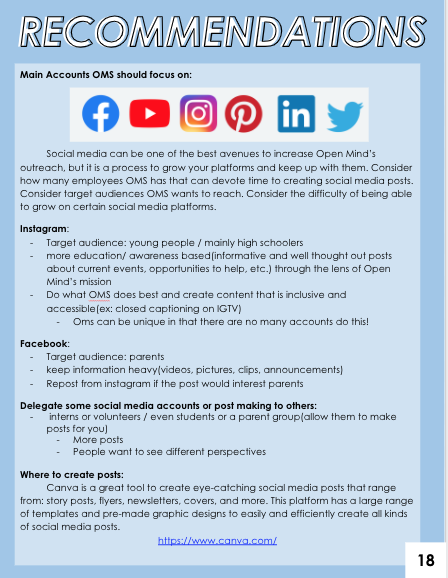
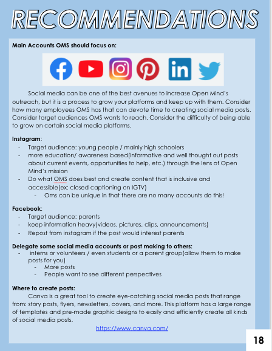
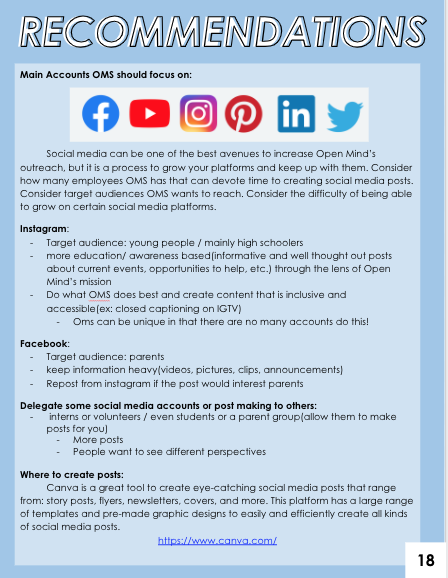

Kimberly Concepcion
I was exposed to marketing research my senior year of high school while interning for a non-profit called Get Mad Together. The internship allowed me to meet workers from the company, Salesforce, where I was taught market research skills such as design thinking.
During my internship at Get Mad Together, I was the project manager for my team as we were trying to expand another non-profit's social media presence and engagement.
I brought my passion and knowledge of marketing into college as I currently am a marketing volunteer for the Assoicated Student Program Board at the University of California Riverside.
Experience
Intern
• Project Manager Intern for non-profit company, Get Mad Together.
• Applied data-driven research to help Bay Area non-profits develop their outreach and digital channels.
• Designed a final deliverable with reccomended social media campagins, posts, and information on different platforms' algorithms.
Retreat and Youth Group Leader
• Arranged and led weekly meetings in preparation for retreats, youth group meetings, and social media campagins.
• Head of social media, promoting events such as talent shows and fundraisers.
Marketing Volunteer
• Assisted Marketing Directors at Associated Students Program Board, University of California Riverside.
• Photographed and videographed events such as concerts and guest lectures.
• Created educational content to help promote student education
• Experience with Photoshop and Adobe Illustrator.
Education
University of California Riverside
Portfolio
 



